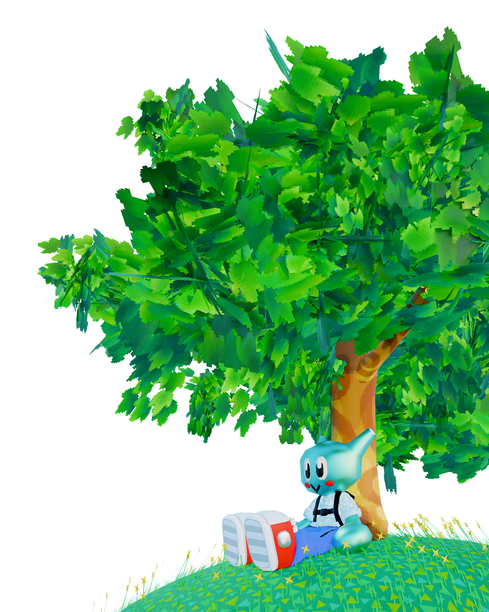

V-2.0<!DOCTYPE html>
<html>
    
<head>
        <title>homepage</title>
    
    <link rel="preconnect" href="https://fonts.googleapis.com">
<link rel="preconnect" href="https://fonts.gstatic.com" crossorigin>
<link href="https://fonts.googleapis.com/css2?family=Montserrat:ital,wght@0,100..900;1,100..900&display=swap" rel="stylesheet">
    
    
    <link rel="preconnect" href="https://fonts.googleapis.com">
<link rel="preconnect" href="https://fonts.gstatic.com" crossorigin>
<link href="https://fonts.googleapis.com/css2?family=DM+Sans:ital,opsz,wght@0,9..40,100..1000;1,9..40,100..1000&display=swap" rel="stylesheet">
    <link rel="icon" type="image/png" href="indexicons/favicon.png">
    
    <link rel="stylesheet" href="main.css">
    
    
    
</head>

    
    <body>
        
  
        
  
        
        <h1>
        Welcome home.
        </h1>
        <p style="bonuspad">
        Here is where I keep everything I've made in handmade web.
        </p>
        
   
        
        <div class="sitebox">
            <a href="firstwebsite/index.html">
        
            <p1>first site</p1></a>
        </div>

        <div class="sitebox">
        <a href="passionsite/passionsite2.html">
        
            <p1>passion</p1> </a>
        </div>
        
        <div class="sitebox">
        <a href="journal/journal.html">
            <p1>journal</p1></a>
        </div>
        
        <div class="sitebox">
        <a href="vsrstructure/structurefinal.html">
            <p1>structure</p1></a>
        </div>
        
    
        
        <div class=footer><p>Made by Victor Romanko 2024</p> </div>
        
    </body>
